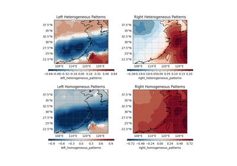

easyclimate.core.eof¶
The analysis of the EOF and MCA
Note
Functions¶
|
Build the model of the Empirical Orthogonal Functions (EOF) analysis, more commonly known as Principal Component Analysis (PCA). |
|
Save the model. |
|
Load a saved EOF model. |
|
Calculate the results of the EOF model. |
|
Project data onto the components. |
|
Build the model of the Rotate Empirical Orthogonal Functions (REOF) analysis. |
|
Save the model. |
|
Load a saved REOF model. |
|
Calculate the results of the REOF model. |
|
Project data onto the components. |
|
Build the model of the Maximum Covariance Analyis (MCA). MCA is a statistical method that finds patterns of maximum covariance between two datasets. |
|
Save the model. |
|
Load a saved MCA model. |
|
Calculate the results of the EOF model. |
|
Get the expansion coefficients of "unseen" data. The expansion coefficients are obtained by projecting data onto the singular vectors. |
|
Compute the EOF projection coefficients for projecting a data field onto an EOF mode over common |
Module Contents¶
- easyclimate.core.eof.get_EOF_model(data_input: xarray.DataArray | list, lat_dim: str, lon_dim: str, time_dim: str = 'time', n_modes: int = 10, remove_seasonal_cycle_mean=False, center: bool = False, standardize: bool = False, use_coslat: bool = True, random_state: int | None = None, solver: Literal['auto', 'full', 'randomized'] = 'auto', solver_kwargs: dict = {}) xeofs.single.eof.EOF¶
Build the model of the Empirical Orthogonal Functions (EOF) analysis, more commonly known as Principal Component Analysis (PCA).
Parameters¶
- data_input:
xarray.DataArrayorlist The spatio-temporal data to be calculated.
- lat_dim:
str. Latitude coordinate dimension name.
- lon_dim:
str. Longitude coordinate dimension name.
- time_dim:
str, default: time. The time coordinate dimension name.
- n_modes:
int, default 10. Number of modes to calculate.
- remove_seasonal_cycle_mean:
bool, default False. Whether to remove seasonal cycle mean of the input data. If it is True, the function will use
easyclimate.remove_seasonal_cycle_meanto remove seasonal cycle mean of the input data.- center:
bool, default False. Whether to center the input data.
- standardize:
bool, default False. Whether to standardize the input data.
- use_coslat:
bool, default True. Whether to use cosine of latitude for scaling.
- random_state:
int, default None. Seed for the random number generator.
- solver: {“auto”, “full”, “randomized”}, default: “auto”.
Solver to use for the SVD computation.
- solver_kwargs:
dict, default {}. Additional keyword arguments to be passed to the SVD solver.
Returns¶

Empirical Orthogonal Function (EOF) and Maximum Covariance Analysis (MCA)
Empirical Orthogonal Function (EOF) and Maximum Covariance Analysis (MCA)- data_input:

- easyclimate.core.eof.save_EOF_model(model: xeofs.single.eof.EOF, path: str, overwrite: bool = False, save_data: bool = False, engine: Literal['zarr', 'netcdf4', 'h5netcdf'] = 'zarr', **kwargs)¶
Save the model.
Parameters¶
- model:
xeofs.single.EOF The model of
xeofs.single.EOFis the results fromeasyclimate.eof.get_EOF_modelorxeofs.single.eof.EOF.fit.- path:
str Path to save the model.
- overwrite:
bool, default False Whether or not to overwrite the existing path if it already exists. Ignored unless engine = “zarr”.
- save_data:
bool, default False Whether or not to save the full input data along with the fitted components.
- engine: {“zarr”, “netcdf4”, “h5netcdf”}, default “zarr”
Xarray backend engine to use for writing the saved model.
- **kwargs:
dict. Additional keyword arguments to pass to xarray.DataTree.to_netcdf() or xarray.DataTree.to_zarr().
- model:
- easyclimate.core.eof.load_EOF_model(path: str, engine: Literal['zarr', 'netcdf4', 'h5netcdf'] = 'zarr', **kwargs) xeofs.single.eof.EOF¶
Load a saved EOF model.
Parameters¶
Returns¶
The model of
xeofs.single.EOFis the results fromeasyclimate.eof.get_EOF_modelorxeofs.single.eof.EOF.fit.
- easyclimate.core.eof.calc_EOF_analysis(model: xeofs.single.eof.EOF, PC_normalized: bool = True) xarray.Dataset¶
Calculate the results of the EOF model.
Parameters¶
- model:
xeofs.single.EOF The model of
xeofs.single.EOFis the results fromeasyclimate.eof.get_EOF_modelorxeofs.single.eof.EOF.fit.- PC_normalized:
bool, default True. Whether to normalize the scores by the L2 norm (singular values).
Returns¶
The results of the EOF model
xarray.Dataset.EOF: The (EOF) components: The components in EOF anaylsis are the eigenvectors of the covariance/correlation matrix. Other names include the principal components or EOFs.
PC: The (PC) scores: The scores in EOF anaylsis are the projection of the data matrix onto the eigenvectors of the covariance matrix (or correlation) matrix. Other names include the principal component (PC) scores or just PCs.
explained_variance: The explained variance. The explained variance \(\lambda_i\) is the variance explained by each mode. It is defined as
\[\lambda_i = \frac{\sigma_i^2}{N-1}\]where \(\sigma_i\) is the singular value of the \(i\)-th mode and \(N\) is the number of samples. Equivalently, \(\lambda_i\) is the \(i\)-th eigenvalue of the covariance matrix.
explained_variance_ratio: The explained variance ratio. The explained variance ratio \(\gamma_i\) is the variance explained by each mode normalized by the total variance. It is defined as
\[\gamma_i = \frac{\lambda_i}{\sum_{j=1}^M \lambda_j}\]where \(\lambda_i\) is the explained variance of the \(i\)-th mode and \(M\) is the total number of modes.
singular_values: The singular values of the Singular Value Decomposition (SVD).
Empirical Orthogonal Function (EOF) and Maximum Covariance Analysis (MCA)
Empirical Orthogonal Function (EOF) and Maximum Covariance Analysis (MCA)- model:
- easyclimate.core.eof.get_EOF_projection(model: xeofs.single.eof.EOF, data: xarray.DataArray, normalized: bool = True)¶
Project data onto the components.
Parameters¶
- model:
xeofs.single.EOF The model of
xeofs.single.EOFis the results fromeasyclimate.eof.get_EOF_modelorxeofs.single.eof.EOF.fit.- data:
xarray.DataArray Data to be transformed.
- normalized:
bool, default True. Whether to normalize the scores by the L2 norm.
Returns¶
- projections:
xarray.DataArray Projections of the data onto the components.
- model:
- easyclimate.core.eof.get_REOF_model(data_input: xarray.DataArray, lat_dim: str, lon_dim: str, time_dim: str = 'time', n_modes: int = 2, power: int = 1, max_iter: int = None, rtol: float = 1e-08, remove_seasonal_cycle_mean=False, standardize: bool = False, use_coslat: bool = True, random_state=None, solver: Literal['auto', 'full', 'randomized'] = 'auto', solver_kwargs={}) xeofs.single.EOFRotator¶
Build the model of the Rotate Empirical Orthogonal Functions (REOF) analysis.
Parameters¶
- data_input:
xarray.DataArray The spatio-temporal data to be calculated.
- lat_dim:
str. Latitude coordinate dimension name.
- lon_dim:
str. Longitude coordinate dimension name.
- time_dim:
str, default: time. The time coordinate dimension name.
- n_modes:
int, default 10. Number of modes to calculate.
- remove_seasonal_cycle_mean:
bool, default False. Whether to remove seasonal cycle mean of the input data. If it is True, the function will use
easyclimate.remove_seasonal_cycle_meanto remove seasonal cycle mean of the input data.- standardize:
bool, default False. Whether to standardize the input data.
- use_coslat:
bool, default True. Whether to use cosine of latitude for scaling.
- random_state:
int, default None. Seed for the random number generator.
- solver: {“auto”, “full”, “randomized”}, default: “auto”.
Solver to use for the SVD computation.
- solver_kwargs:
dict, default {}. Additional keyword arguments to be passed to the SVD solver.
Returns¶
Reference¶
Richman, M.B. (1986), Rotation of principal components. J. Climatol., 6: 293-335. https://doi.org/10.1002/joc.3370060305
- data_input:
- easyclimate.core.eof.save_REOF_model(model: xeofs.single.EOFRotator, path: str, overwrite: bool = False, save_data: bool = False, engine: Literal['zarr', 'netcdf4', 'h5netcdf'] = 'zarr', **kwargs)¶
Save the model.
Parameters¶
- model:
xeofs.single.EOFRotator The model of
xeofs.single.EOFRotatoris the results fromeasyclimate.eof.get_REOF_modelorxeofs.single.EOFRotator.fit.- path:
str Path to save the model.
- overwrite:
bool, default False Whether or not to overwrite the existing path if it already exists. Ignored unless engine = “zarr”.
- save_data:
bool, default False Whether or not to save the full input data along with the fitted components.
- engine: {“zarr”, “netcdf4”, “h5netcdf”}, default “zarr”
Xarray backend engine to use for writing the saved model.
- **kwargs:
dict. Additional keyword arguments to pass to xarray.DataTree.to_netcdf() or xarray.DataTree.to_zarr().
- model:
- easyclimate.core.eof.load_REOF_model(path: str, engine: Literal['zarr', 'netcdf4', 'h5netcdf'] = 'zarr', **kwargs) xeofs.single.EOFRotator¶
Load a saved REOF model.
Parameters¶
Returns¶
The model of
xeofs.single.EOFRotatoris the results fromeasyclimate.eof.get_REOF_modelorxeofs.single.EOFRotator.fit.
- easyclimate.core.eof.calc_REOF_analysis(model: xeofs.single.EOFRotator, PC_normalized: bool = True) xarray.Dataset¶
Calculate the results of the REOF model.
Parameters¶
- model:
xeofs.single.EOFRotator The model of
xeofs.single.EOFRotatoris the results fromeasyclimate.eof.get_REOF_modelorxeofs.single.EOFRotator.fit.- PC_normalized:
bool, default True. Whether to normalize the scores by the L2 norm (singular values).
Returns¶
The results of the EOF model
xarray.Dataset.EOF: The (EOF) components: The components in EOF anaylsis are the eigenvectors of the covariance/correlation matrix. Other names include the principal components or EOFs.
PC: The (PC) scores: The scores in EOF anaylsis are the projection of the data matrix onto the eigenvectors of the covariance matrix (or correlation) matrix. Other names include the principal component (PC) scores or just PCs.
explained_variance: The explained variance. The explained variance \(\lambda_i\) is the variance explained by each mode. It is defined as
\[\lambda_i = \frac{\sigma_i^2}{N-1}\]where \(\sigma_i\) is the singular value of the \(i\)-th mode and \(N\) is the number of samples. Equivalently, \(\lambda_i\) is the \(i\)-th eigenvalue of the covariance matrix.
explained_variance_ratio: The explained variance ratio. The explained variance ratio \(\gamma_i\) is the variance explained by each mode normalized by the total variance. It is defined as
\[\gamma_i = \frac{\lambda_i}{\sum_{j=1}^M \lambda_j}\]where \(\lambda_i\) is the explained variance of the \(i\)-th mode and \(M\) is the total number of modes.
singular_values: The singular values of the Singular Value Decomposition (SVD).
- model:
- easyclimate.core.eof.get_REOF_projection(model: xeofs.single.EOFRotator, data: xarray.DataArray, normalized: bool = True)¶
Project data onto the components.
Parameters¶
- model:
xeofs.single.EOFRotator The model of
xeofs.single.EOFRotatoris the results fromeasyclimate.eof.get_REOF_modelorxeofs.single.EOFRotator.fit.- data:
xarray.DataArray Data to be transformed.
- normalized:
bool, default True. Whether to normalize the scores by the L2 norm.
Returns¶
- projections:
xarray.DataArray Projections of the data onto the components.
- model:
- easyclimate.core.eof.get_MCA_model(data_left: xarray.DataArray, data_right: xarray.DataArray, lat_dim: str, lon_dim: str, time_dim: str = 'time', n_modes=10, standardize: bool = False, use_coslat: bool = False, n_pca_modes: int = 'auto', weights_left: xarray.DataArray = None, weights_right: xarray.DataArray = None, random_state: int = None, solver: Literal['auto', 'full', 'randomized'] = 'auto', solver_kwargs: dict = {}) xeofs.cross.MCA¶
Build the model of the Maximum Covariance Analyis (MCA). MCA is a statistical method that finds patterns of maximum covariance between two datasets.
Note
MCA is similar to Principal Component Analysis (PCA) and Canonical Correlation Analysis (CCA), but while PCA finds modes of maximum variance and CCA finds modes of maximum correlation, MCA finds modes of maximum covariance.
Parameters¶
- data_left:
xarray.DataArray Left input data.
- data_right:
xarray.DataArray Right input data.
- lat_dim:
str. Latitude coordinate dimension name.
- lon_dim:
str. Longitude coordinate dimension name.
- time_dim:
str, default: time. The time coordinate dimension name.
- n_modes:
int, default 10. Number of modes to calculate.
- standardize:
bool, default False. Whether to standardize the input data.
- use_coslat:
bool, default True. Whether to use cosine of latitude for scaling.
- n_pca_modes:
int, default same as n_modes, i.e, ‘auto’. The number of principal components to retain during the PCA preprocessing step applied to both data sets prior to executing MCA. If set to None, PCA preprocessing will be bypassed, and the MCA will be performed on the original datasets. Specifying an integer value greater than 0 for n_pca_modes will trigger the PCA preprocessing, retaining only the specified number of principal components. This reduction in dimensionality can be especially beneficial when dealing with high-dimensional data, where computing the cross-covariance matrix can become computationally intensive or in scenarios where multicollinearity is a concern.
- weights_left:
xarray.DataArray Weights to be applied to the left input data.
- weights_right:
xarray.DataArray Weights to be applied to the right input data.
- random_state:
int, default None. Seed for the random number generator.
- solver: {“auto”, “full”, “randomized”}, default: “auto”.
Solver to use for the SVD computation.
- solver_kwargs:
dict, default {}. Additional keyword arguments to be passed to the SVD solver.
Returns¶
Reference¶
Bretherton, C. S., Smith, C., & Wallace, J. M. (1992). An Intercomparison of Methods for Finding Coupled Patterns in Climate Data. Journal of Climate, 5(6), 541-560. https://doi.org/10.1175/1520-0442(1992)005<0541:AIOMFF>2.0.CO;2
Cherry, S. (1996). Singular Value Decomposition Analysis and Canonical Correlation Analysis. Journal of Climate, 9(9), 2003-2009. https://doi.org/10.1175/1520-0442(1996)009<2003:SVDAAC>2.0.CO;2
Empirical Orthogonal Function (EOF) and Maximum Covariance Analysis (MCA)
Empirical Orthogonal Function (EOF) and Maximum Covariance Analysis (MCA)- data_left:
- easyclimate.core.eof.save_MCA_model(model: xeofs.cross.MCA, path: str, overwrite: bool = False, save_data: bool = False, engine: Literal['zarr', 'netcdf4', 'h5netcdf'] = 'zarr', **kwargs)¶
Save the model.
Parameters¶
- model:
xeofs.cross.MCA The model of
xeofs.cross.MCAis the results fromeasyclimate.eof.get_MCA_modelorxeofs.cross.mca.MCA.fit.- path:
str Path to save the model.
- overwrite:
bool, default False Whether or not to overwrite the existing path if it already exists. Ignored unless engine = “zarr”.
- save_data:
bool, default False Whether or not to save the full input data along with the fitted components.
- engine: {“zarr”, “netcdf4”, “h5netcdf”}, default “zarr”
Xarray backend engine to use for writing the saved model.
- **kwargs:
dict. Additional keyword arguments to pass to xarray.DataTree.to_netcdf() or xarray.DataTree.to_zarr().
- model:
- easyclimate.core.eof.load_MCA_model(path: str, engine: Literal['zarr', 'netcdf4', 'h5netcdf'] = 'zarr', **kwargs) xeofs.cross.MCA¶
Load a saved MCA model.
Parameters¶
Returns¶
The model of
xeofs.cross.MCAis the results fromeasyclimate.eof.get_MCA_modelorxeofs.cross.mca.MCA.fit.
- easyclimate.core.eof.calc_MCA_analysis(model: xeofs.cross.MCA, correction=None, alpha=0.05, PC_normalized: bool = True) easyclimate.core.datanode.DataNode¶
Calculate the results of the EOF model.
Parameters¶
- model:
xeofs.cross.MCA The model of
xeofs.cross.MCAis the results fromeasyclimate.eof.get_MCA_modelorxeofs.cross.mca.MCA.fit.- correction:
str, default None Method to apply a multiple testing correction. If None, no correction is applied. Available methods are:
bonferroni : one-step correction
sidak : one-step correction
holm-sidak : step down method using Sidak adjustments
holm : step-down method using Bonferroni adjustments
simes-hochberg : step-up method (independent)
hommel : closed method based on Simes tests (non-negative)
fdr_bh : Benjamini/Hochberg (non-negative) (default)
fdr_by : Benjamini/Yekutieli (negative)
fdr_tsbh : two stage fdr correction (non-negative)
fdr_tsbky : two stage fdr correction (non-negative)
- alpha:
float, default 0.05 The desired family-wise error rate. Not used if correction is None.
- PC_normalized:
bool, default True. Whether to normalize the scores by the L2 norm (singular values).
Returns¶
The results of the MCA model (
easyclimate.DataNode).EOF: The singular vectors of the left and right field.
PC: The scores of the left and right field. The scores in MCA are the projection of the left and right field onto the left and right singular vector of the cross-covariance matrix.
correlation_coefficients_X: Get the correlation coefficients for the scores of \(X\).
The correlation coefficients of the scores of \(X\) are given by:
\[c_{x, ij} = \text{corr} \left(\mathbf{r}_{x, i}, \mathbf{r}_{x, j} \right)\]where \(\mathbf{r}_{x, i}\) and \(\mathbf{r}_{x, j}\) are the \(i\) th and \(j\) th scores of \(X\).
correlation_coefficients_Y: Get the correlation coefficients for the scores of \(Y\).
The correlation coefficients of the scores of \(Y\) are given by:
\[c_{y, ij} = \text{corr} \left(\mathbf{r}_{y, i}, \mathbf{r}_{y, j} \right)\]where \(\mathbf{r}_{y, i}\) and \(\mathbf{r}_{y, j}\) are the \(i\) th and \(j\) th scores of \(Y\). - covariance_fraction_CD95: Get the covariance fraction (CF).
Cheng and Dunkerton (1995) define the CF as follows:
\[CF_i = \frac{\sigma_i}{\sum_{i=1}^{m} \sigma_i}\]where \(m\) is the total number of modes and \(\sigma_i\) is the \(i\)-th singular value of the covariance matrix.
This implementation estimates the sum of singular values from the first n modes, therefore one should aim to retain as many modes as possible to get a good estimate of the covariance fraction.
Note
In MCA, the focus is on maximizing the squared covariance (SC). As a result, this quantity is preserved during decomposition - meaning the SC of both datasets remains unchanged before and after decomposition. Each mode explains a fraction of the total SC, and together, all modes can reconstruct the total SC of the cross-covariance matrix. However, the (non-squared) covariance is not invariant in MCA; it is not preserved by the individual modes and cannot be reconstructed from them. Consequently, the squared covariance fraction (SCF) is invariant in MCA and is typically used to assess the relative importance of each mode. In contrast, the convariance fraction (CF) is not invariant. Cheng and Dunkerton (1995) introduced the CF to compare the relative importance of modes before and after Varimax rotation in MCA. Notably, when the data fields in MCA are identical, the CF corresponds to the explained variance ratio in Principal Component Analysis (PCA).
cross_correlation_coefficients: Get the cross-correlation coefficients.
The cross-correlation coefficients between the scores of \(X\) and \(Y\) are computed as:
\[c_{xy, i} = \text{corr} \left(\mathbf{r}_{x, i}, \mathbf{r}_{y, i} \right)\]where \(\mathbf{r}_{x, i}\) and \(\mathbf{r}_{y, i}\) are the \(i\) th scores of \(X\) and \(Y\).
Note
When \(\alpha=0\), the cross-correlation coefficients are equivalent to the canonical correlation coefficients.
fraction_variance_X_explained_by_X: Get the fraction of variance explained (FVE X).
The FVE X is the fraction of variance in \(X\) explained by the scores of \(X\).
It is computed as a weighted mean-square error (see equation (15) in Swenson (2015)) :
\[FVE_{X|X,i} = 1 - \frac{\|\mathbf{d}_{X,i}\|_F^2}{\|X\|_F^2}\]where \(\mathbf{d}_{X,i}\) are the residuals of the input data \(X\) after reconstruction by the \(i\) th scores of \(X\).
fraction_variance_Y_explained_by_X: Get the fraction of variance explained (FVE YX).
The FVE YX is the fraction of variance in \(Y\) explained by the scores of \(X\). It is computed as a weighted mean-square error (see equation (15) in Swenson (2015)) :
\[FVE_{Y|X,i} = 1 - \frac{\|(X^TX)^{-1/2} \mathbf{d}_{X,i}^T \mathbf{d}_{Y,i}\|_F^2}{\|(X^TX)^{-1/2} X^TY\|_F^2}\]where \(\mathbf{d}_{X,i}\) and \(\mathbf{d}_{Y,i}\) are the residuals of the input data \(X\) and \(Y\) after reconstruction by the \(i\) th scores of \(X\) and \(Y\), respectively.
fraction_variance_Y_explained_by_Y: Get the fraction of variance explained (FVE Y).
The FVE Y is the fraction of variance in \(Y\) explained by the scores of \(Y\). It is computed as a weighted mean-square error (see equation (15) in Swenson (2015)) :
\[FVE_{Y|Y,i} = 1 - \frac{\|\mathbf{d}_{Y,i}\|_F^2}{\|Y\|_F^2}\]where \(\mathbf{d}_{Y,i}\) are the residuals of the input data \(Y\) after reconstruction by the \(i\) th scores of \(Y\).
squared_covariance_fraction: Get the squared covariance fraction (SCF).
The SCF is computed as a weighted mean-square error (see equation (15) in Swenson (2015)) :
\[SCF_{i} = 1 - \frac{\|\mathbf{d}_{X,i}^T \mathbf{d}_{Y,i}\|_F^2}{\|X^TY\|_F^2}\]where \(\mathbf{d}_{X,i}\) and \(\mathbf{d}_{Y,i}\) are the residuals of the input data \(X\) and \(Y\) after reconstruction by the \(i\) th scores of \(X\) and \(Y\), respectively.
heterogeneous_patterns: The heterogeneous patterns of the left and right field.
The heterogeneous patterns are the correlation coefficients between the input data and the scores of the other field.
More precisely, the heterogeneous patterns \(r_{\mathrm{het}}\) are defined as
\[r_{\mathrm{het}, x} = corr \left(X, A_y \right), \ r_{\mathrm{het}, y} = corr \left(Y, A_x \right)\]where \(X\) and \(Y\) are the input data, \(A_x\) and \(A_y\) are the scores of the left and right field, respectively.
homogeneous_patterns: The homogeneous patterns of the left and right field.
The homogeneous patterns are the correlation coefficients between the input data and the scores.
More precisely, the homogeneous patterns \(r_{\mathrm{hom}}\) are defined as
\[r_{\mathrm{hom}, x} = corr \left(X, A_x \right), \ r_{\mathrm{hom}, y} = corr \left(Y, A_y \right)\]where \(X\) and \(Y\) are the input data, \(A_x\) and \(A_y\) are the scores of the left and right field, respectively.
Reference¶
Cheng, X., & Dunkerton, T. J. (1995). Orthogonal Rotation of Spatial Patterns Derived from Singular Value Decomposition Analysis. Journal of Climate, 8(11), 2631-2643. https://doi.org/10.1175/1520-0442(1995)008<2631:OROSPD>2.0.CO;2
Swenson, E. (2015). Continuum Power CCA: A Unified Approach for Isolating Coupled Modes. Journal of Climate, 28(3), 1016-1030. https://doi.org/10.1175/JCLI-D-14-00451.1
Empirical Orthogonal Function (EOF) and Maximum Covariance Analysis (MCA)
Empirical Orthogonal Function (EOF) and Maximum Covariance Analysis (MCA)- model:
- easyclimate.core.eof.get_MCA_projection(model: xeofs.cross.mca.MCA, data_left: xarray.DataArray | xarray.Dataset, data_right: xarray.DataArray | xarray.Dataset, normalized: bool = True) easyclimate.core.datanode.DataNode¶
Get the expansion coefficients of “unseen” data. The expansion coefficients are obtained by projecting data onto the singular vectors.
Parameters¶
- model:
xeofs.cross.MCA The model of
xeofs.cross.MCAis the results fromeasyclimate.eof.get_MCA_modelorxeofs.cross.mca.MCA.fit.- data_left:
xarray.DataArrayorxarray.Dataset Left input data. Must be provided if
data_rightis not provided.- data_right:
xarray.DataArrayorxarray.Dataset Right input data. Must be provided if
data_leftis not provided.- normalized:
bool, default False. Whether to return L2 normalized scores.
Returns¶
scores:
easyclimate.DataNodescores1: Left scores.
scores2: Right scores.
- model:
- easyclimate.core.eof.calc_eof_projection_coefficient(data_field: xarray.DataArray, eof_mode: xarray.DataArray, time_dim: str = 'time')¶
Compute the EOF projection coefficients for projecting a data field onto an EOF mode over common spatial dimensions. This is useful in EOF (Empirical Orthogonal Function) analysis for climate or geophysical data, where the field is projected onto spatial modes to obtain time-varying coefficients.
The mathematical foundation is based on the decomposition (\(\mathbf{X} = \mathbf{V} \mathbf{T}\)), solving for the coefficients (\(\mathbf{T} = \mathbf{V}^{-1} \mathbf{X}\)). For a single normalized EOF mode (\(\mathbf{V}\)), this simplifies to the projection:
\[t = \frac{\sum (x \cdot v)}{\sum v^2}\]where the summation is over the stacked spatial (pattern) dimensions, and (\(\mathbf{X}\)) is the data field (potentially with a ‘time’ dimension), (\(\mathbf{V}\)) is the EOF mode (spatial pattern).
The spatial pattern dimensions are automatically detected as the intersection of the input dimensions, excluding ‘time’ (if present). Both inputs are stacked along these pattern dimensions into a temporary ‘pattern’ dimension, and the projection is computed along it. NaN values are filled with 0 before computation.
If data_field lacks ‘time’, the result is a scalar.
If data_field has ‘time’ and eof_mode does not, the result preserves the ‘time’ dimension.
Broadcasting occurs automatically for compatible shapes.
Parameters¶
- data_field
xarray.DataArray The input data field to project (e.g., time series of spatial fields \(\mathbf{X}\)).
- eof_mode
xarray.DataArray The EOF spatial mode \(\mathbf{V}\) (must have compatible spatial dimensions).
- time_dim:
str, default: time. The time coordinate dimension name.
Returns¶
- coefficients
xarray.DataArrayor scalar The EOF projection coefficients (\(\mathbf{T}\)). Dimensions match the non-spatial dimensions of data_field (e.g., ‘time’ if present).
Note
Assumes inputs have compatible shapes and the only differing dimension is ‘time’ in data_field.
NaNs are filled with 0 to avoid propagation; adjust if needed.
For zero-norm cases in the denominator, the result is set to 0.
Examples¶
Scalar projection for a single spatial field:
>>> import xarray as xr >>> import numpy as np >>> import easyclimate as ecl >>> # Create a random number generator with a fixed seed. >>> rng = np.random.default_rng(42) >>> field = xr.DataArray(rng.random((2, 3)), dims=['lat', 'lon']) >>> eof_v = xr.DataArray(rng.random((2, 3)), dims=['lat', 'lon']) >>> coeff = ecl.eof.calc_eof_projection_coefficient(field, eof_v) >>> print(coeff) <xarray.DataArray 'eof_projection' ()> Size: 8B array(0.95208032) Attributes: long_name: EOF Projection Coefficient units:
Time series projection:
>>> # Create a random number generator with a fixed seed. >>> rng = np.random.default_rng(42) >>> time = xr.DataArray(np.arange(4), dims=['time']) >>> timed_field = xr.DataArray(rng.random((4, 2, 3)), dims=['time', 'lat', 'lon']) >>> coeff_time = calc_eof_projection_coefficient(timed_field, eof_v) >>> print(coeff_time) <xarray.DataArray 'eof_projection' (time: 4)> Size: 32B array([0.95208032, 1. , 0.64684219, 1.06549741]) Dimensions without coordinates: time Attributes: long_name: EOF Projection Coefficient units: